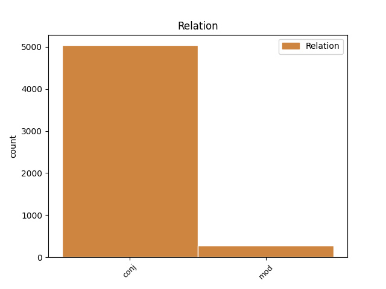
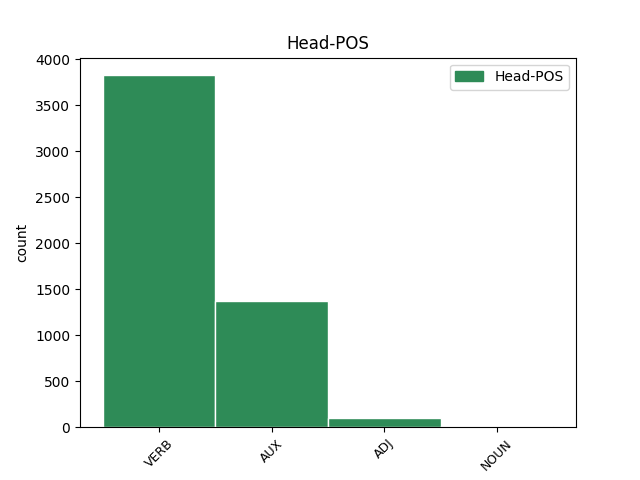
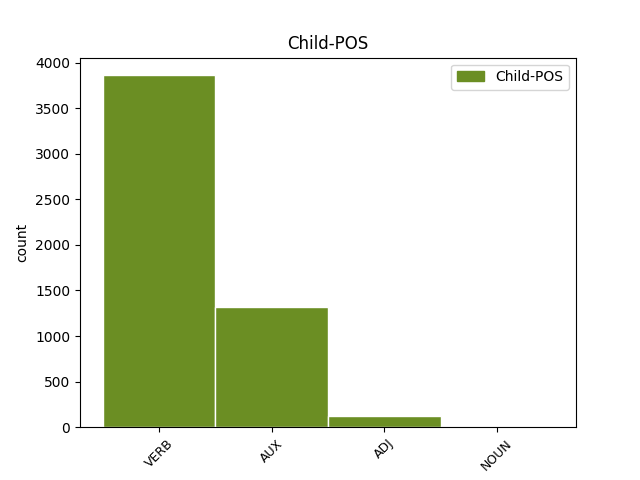

Distribution of features within this leaf



Agreement Rules sorted by frequency.
- When the dependent token is the conjunct(conj) of the head token,
1 vaeghõivatud _ _ _ _ 0 _ _ _
2 - _ _ _ _ 0 _ _ _
3 soovivad soovima VERB V Mood=Ind|Number=Plur|Person=3|Tense=Pres|VerbForm=Fin|Voice=Act 0 _ _ _
4 rohkem _ _ _ _ 0 _ _ _
5 töötada _ _ _ _ 0 _ _ _
6 ja _ _ _ _ 0 _ _ _
7 on olema AUX V Mood=Ind|Number=Plur|Person=3|Tense=Pres|VerbForm=Fin|Voice=Act 3 conj _ _
8 valmis _ _ _ _ 0 _ _ _
9 lisatööd _ _ _ _ 0 _ _ _
10 kohe _ _ _ _ 0 _ _ _
11 ( _ _ _ _ 0 _ _ _
12 kahe _ _ _ _ 0 _ _ _
13 nädala _ _ _ _ 0 _ _ _
14 jooksul _ _ _ _ 0 _ _ _
15 ) _ _ _ _ 0 _ _ _
16 vastu _ _ _ _ 0 _ _ _
17 võtma _ _ _ _ 0 _ _ _
1 Viimase _ _ _ _ 0 _ _ _
2 12 _ _ _ _ 0 _ _ _
3 kuu _ _ _ _ 0 _ _ _
4 jooksul _ _ _ _ 0 _ _ _
5 töö _ _ _ _ 0 _ _ _
6 saanud saa=nud ADJ A Degree=Pos|Tense=Past|VerbForm=Part|Voice=Act 7 mod _ _
7 hõivatud hõiva=tu NOUN S Case=Nom|Number=Plur|Tense=Past|VerbForm=Part|Voice=Pass 0 _ _ _
8 töösaamisviisi _ _ _ _ 0 _ _ _
9 järgi _ _ _ _ 0 _ _ _
10 , _ _ _ _ 0 _ _ _
11 1989-2001 _ _ _ _ 0 _ _ _
Disagree Examples:
1 Eesti _ _ _ _ 0 _ _ _
2 Ekspressi _ _ _ _ 0 _ _ _
3 teada _ _ _ _ 0 _ _ _
4 on olema AUX V Mood=Ind|Number=Sing|Person=3|Tense=Pres|VerbForm=Fin|Voice=Act 7 mod _ _
5 Eesti _ _ _ _ 0 _ _ _
6 Pank _ _ _ _ 0 _ _ _
7 uurinud uurima VERB V Tense=Past|VerbForm=Part|Voice=Act 0 _ _ _
8 Hansapanga _ _ _ _ 0 _ _ _
9 tehinguid _ _ _ _ 0 _ _ _
10 , _ _ _ _ 0 _ _ _
11 mis _ _ _ _ 0 _ _ _
12 toimusid _ _ _ _ 0 _ _ _
13 kaks _ _ _ _ 0 _ _ _
14 aastat _ _ _ _ 0 _ _ _
15 tagasi _ _ _ _ 0 _ _ _
16 suvel _ _ _ _ 0 _ _ _
17 ja _ _ _ _ 0 _ _ _
18 mille _ _ _ _ 0 _ _ _
19 käigus _ _ _ _ 0 _ _ _
20 voolas _ _ _ _ 0 _ _ _
21 panka _ _ _ _ 0 _ _ _
22 ligi _ _ _ _ 0 _ _ _
23 miljardi _ _ _ _ 0 _ _ _
24 krooni _ _ _ _ 0 _ _ _
25 ulatuses _ _ _ _ 0 _ _ _
26 kahtlast _ _ _ _ 0 _ _ _
27 raha _ _ _ _ 0 _ _ _
28 . _ _ _ _ 0 _ _ _
1 Eesti _ _ _ _ 0 _ _ _
2 Ekspressi _ _ _ _ 0 _ _ _
3 otsesele _ _ _ _ 0 _ _ _
4 küsimusele _ _ _ _ 0 _ _ _
5 vastates _ _ _ _ 0 _ _ _
6 välistab _ _ _ _ 0 _ _ _
7 Mõis _ _ _ _ 0 _ _ _
8 täielikult _ _ _ _ 0 _ _ _
9 võimaluse _ _ _ _ 0 _ _ _
10 , _ _ _ _ 0 _ _ _
11 et _ _ _ _ 0 _ _ _
12 Eesti _ _ _ _ 0 _ _ _
13 pankade _ _ _ _ 0 _ _ _
14 , _ _ _ _ 0 _ _ _
15 sealhulgas _ _ _ _ 0 _ _ _
16 Hansapanga _ _ _ _ 0 _ _ _
17 kaudu _ _ _ _ 0 _ _ _
18 toimus toimuma VERB V Mood=Ind|Number=Sing|Person=3|Tense=Past|VerbForm=Fin|Voice=Act 0 _ _ _
19 või _ _ _ _ 0 _ _ _
20 toimub toimuma VERB V Mood=Ind|Number=Sing|Person=3|Tense=Pres|VerbForm=Fin|Voice=Act 18 conj _ _
21 rahapesu _ _ _ _ 0 _ _ _
22 . _ _ _ _ 0 _ _ _
1 Pangas _ _ _ _ 0 _ _ _
2 avalike _ _ _ _ 0 _ _ _
3 suhete _ _ _ _ 0 _ _ _
4 eest _ _ _ _ 0 _ _ _
5 vastutav _ _ _ _ 0 _ _ _
6 Kristi _ _ _ _ 0 _ _ _
7 Liiva _ _ _ _ 0 _ _ _
8 ütleb _ _ _ _ 0 _ _ _
9 korduvalt _ _ _ _ 0 _ _ _
10 , _ _ _ _ 0 _ _ _
11 et _ _ _ _ 0 _ _ _
12 Hansapank _ _ _ _ 0 _ _ _
13 ei _ _ _ _ 0 _ _ _
14 ole olema AUX V Connegative=Yes|Mood=Ind|Tense=Pres|VerbForm=Fin|Voice=Act 0 _ _ _
15 kahtlast _ _ _ _ 0 _ _ _
16 raha _ _ _ _ 0 _ _ _
17 kasutanud _ _ _ _ 0 _ _ _
18 ega _ _ _ _ 0 _ _ _
19 rahapesule _ _ _ _ 0 _ _ _
20 kaasa _ _ _ _ 0 _ _ _
21 aidanud aitama VERB V Connegative=Yes|Mood=Ind|Tense=Past|VerbForm=Fin|Voice=Act 14 conj _ SpaceAfter=No
22 . _ _ _ _ 0 _ _ _
1 Kiikinguklubi _ _ _ _ 0 _ _ _
2 Vabariigi _ _ _ _ 0 _ _ _
3 Võllimees _ _ _ _ 0 _ _ _
4 kavandab kavandama VERB V Mood=Ind|Number=Sing|Person=3|Tense=Pres|VerbForm=Fin|Voice=Act 0 _ _ _
5 kokku _ _ _ _ 0 _ _ _
6 seitsme _ _ _ _ 0 _ _ _
7 osavõistlusega _ _ _ _ 0 _ _ _
8 kiikingu _ _ _ _ 0 _ _ _
9 karikasarja _ _ _ _ 0 _ _ _
10 , _ _ _ _ 0 _ _ _
11 kinnitas kinnitama VERB V Mood=Ind|Number=Sing|Person=3|Tense=Past|VerbForm=Fin|Voice=Act 4 conj _ _
12 klubi _ _ _ _ 0 _ _ _
13 president _ _ _ _ 0 _ _ _
14 ja _ _ _ _ 0 _ _ _
15 unikaalse _ _ _ _ 0 _ _ _
16 ala _ _ _ _ 0 _ _ _
17 leiutaja _ _ _ _ 0 _ _ _
18 Ado _ _ _ _ 0 _ _ _
19 Kosk _ _ _ _ 0 _ _ _
20 . _ _ _ _ 0 _ _ _
1 " _ _ _ _ 0 _ _ _
2 Sel _ _ _ _ 0 _ _ _
3 päeval _ _ _ _ 0 _ _ _
4 tööl _ _ _ _ 0 _ _ _
5 olnud _ _ _ _ 0 _ _ _
6 korrapidaja _ _ _ _ 0 _ _ _
7 sõitis sõitma VERB V Mood=Ind|Number=Sing|Person=3|Tense=Past|VerbForm=Fin|Voice=Act 0 _ _ _
8 ära _ _ _ _ 0 _ _ _
9 ja _ _ _ _ 0 _ _ _
10 on _ _ _ _ 0 _ _ _
11 linnas _ _ _ _ 0 _ _ _
12 tagasi _ _ _ _ 0 _ _ _
13 neljapäeval _ _ _ _ 0 _ _ _
14 , _ _ _ _ 0 _ _ _
15 siis _ _ _ _ 0 _ _ _
16 kuulame kuulama VERB V Mood=Ind|Number=Plur|Person=1|Tense=Pres|VerbForm=Fin|Voice=Act 7 conj _ _
17 ta _ _ _ _ 0 _ _ _
18 üle _ _ _ _ 0 _ _ _
19 , _ _ _ _ 0 _ _ _
20 " _ _ _ _ 0 _ _ _
21 lausus _ _ _ _ 0 _ _ _
22 Solovjov _ _ _ _ 0 _ _ _
23 . _ _ _ _ 0 _ _ _